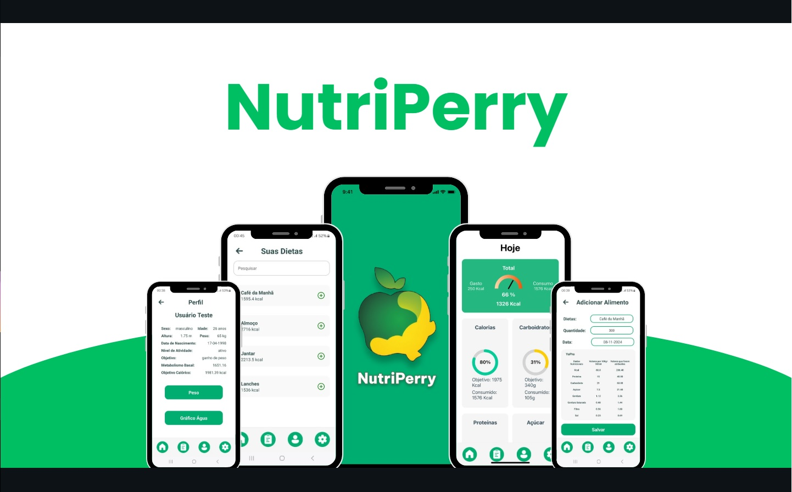
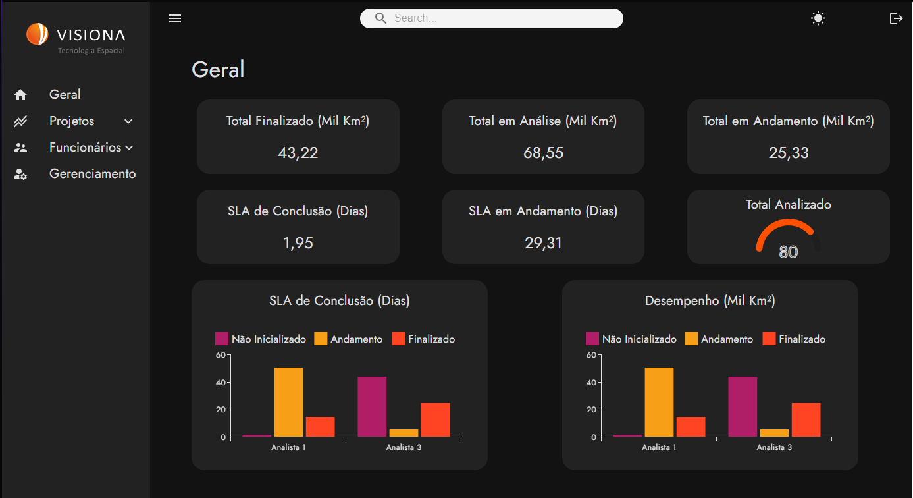

Sobre mim
Sou um desenvolvedor Full Stack com experiência na criação de aplicações web e APIs escaláveis. Possuo formação em Análise e Desenvolvimento de Sistemas pela FATEC e atuei em projetos freelance e suporte técnico, adquirindo habilidades em desenvolvimento de software e infraestrutura de TI. Minha experiência inclui a criação de interfaces responsivas com React e TypeScript, desenvolvimento de APIs em Node.js, modelagem de bancos de dados (MongoDB e PostgreSQL) e testes automatizados com Jest. Além disso, tenho conhecimento em metodologias ágeis (Scrum e Kanban) e controle de versão com Git e GitHub. Busco sempre aprimorar minhas habilidades e contribuir para soluções inovadoras e eficientes.
Projetos e habilidades
-

Nutri Perry
Desenvolvi o NutriPerry, um app mobile para monitoramento nutricional e de atividades físicas, utilizando React Native e TypeScript para uma interface intuitiva. Implementei MongoDB para modelagem do banco de dados, Jest para testes automatizados e Git/GitHub para controle de versão. O app permite registrar alimentos, calcular calorias, monitorar exercícios e gerar relatórios de progresso.
Ver projeto no Github -

Site Institucional
Desenvolvi um site institucional para treinamento e padronização da metodologia ágil e seus artefatos, criando interfaces modernas e responsivas com HTML, CSS, Bootstrap e JavaScript. O design do projeto foi criado com Figma. Além disso, utilizei Git/GitHub para controle de versão.
Ver projeto no Github -

Visiona DashBoard
Desenvolvi um sistema de gestão de funcionários, criando interfaces responsivas com HTML, CSS, TypeScript e React para uma experiência intuitiva. Implementei APIs com Node.js, integradas a um banco de dados MongoDB. Além disso, utilizei Jest para testes automatizados e gerenciei o controle de versão com Git/GitHub.
Ver projeto no Github -

Bike Pass
Desenvolvi uma aplicação para aluguel de bicicletas, criando interfaces dinâmicas e responsivas com HTML, CSS, JavaScript e React. Implementei APIs com Node.js e modelei o banco de dados relacional em PostgreSQL, garantindo eficiência na gestão de reservas e usuários. Além disso, utilizei Git/GitHub para controle de versão.
Ver projeto no Github